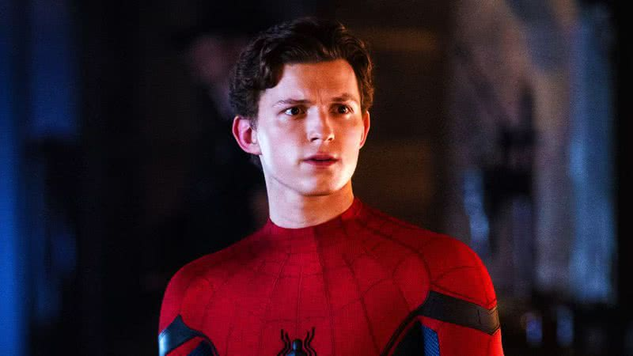

Sobre Tom Holland

Voltar para o inicio
Sobre Andrew Garfield
Sobre Tobey Maguire
Curiosidades sobre Tom Holland
Tom Holland foi o ator mais jovem a interpretar Peter Parker nos cinemas, estreando aos 19 anos em Capitão América: Guerra Civil (2016).
Antes da fama, Tom praticava ginástica e dança, o que o ajudou a realizar muitas acrobacias do Homem-Aranha sem dublê.
Ele ficou famoso por soltar spoilers dos filmes da Marvel sem querer, a ponto de os diretores evitarem dar roteiros completos a ele.
Tom soube que foi escolhido como o novo Homem-Aranha ao ver o anúncio oficial no Instagram — antes mesmo de receber uma ligação da Marvel.
Holland foi o primeiro a interpretar o herói como parte oficial do Universo Cinematográfico Marvel, interagindo com personagens como Tony Stark (Homem de Ferro).